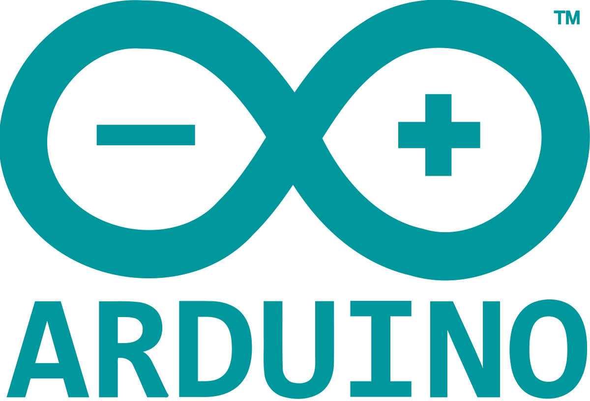
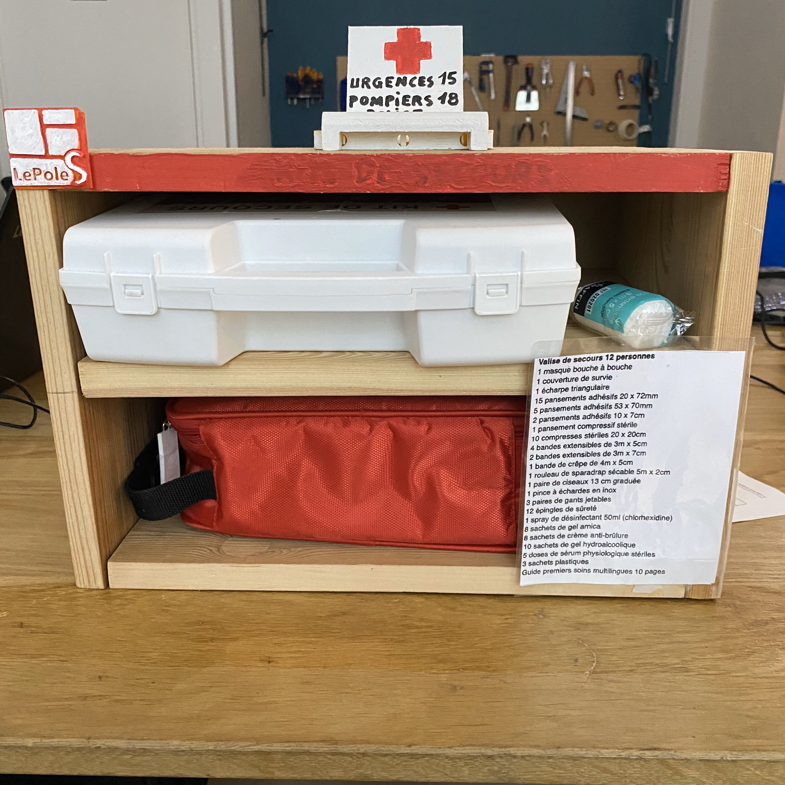

Un bon départ avec la 2D lors de la création de l'affiche Avengers 5. Puis après nous sommes passés à la 3D et c'est la que les choses ont commencés à se compliquer, notamment lorsque nous avons dû créer une caisse de résonnance sur OnShape beaucoup on pris plusieurs heures à comprendre comment le site marchait.
Arduino est un projet plutôt sympa, mais le gros problème est que l'on y a été un peu à l'aveugle, car nous n'avons pas pu nous debrouiller vraiment tout seul, car nous étions la plupart du temps guidés.
Grâce à une récupération de bois dans les encombrants, nous avons pu créer une boîte à pharmacie, ce projet nous a permis de travailler en équipe, car chacun avait une tâche différente à effectuer et cela nous a permis de mieux nous connaître.
WIP